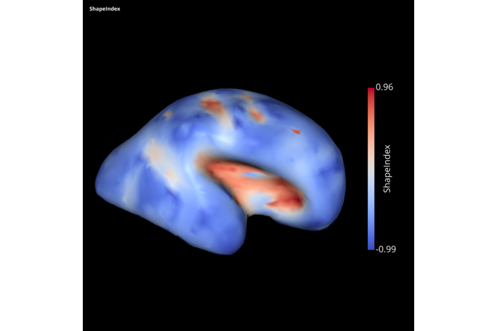
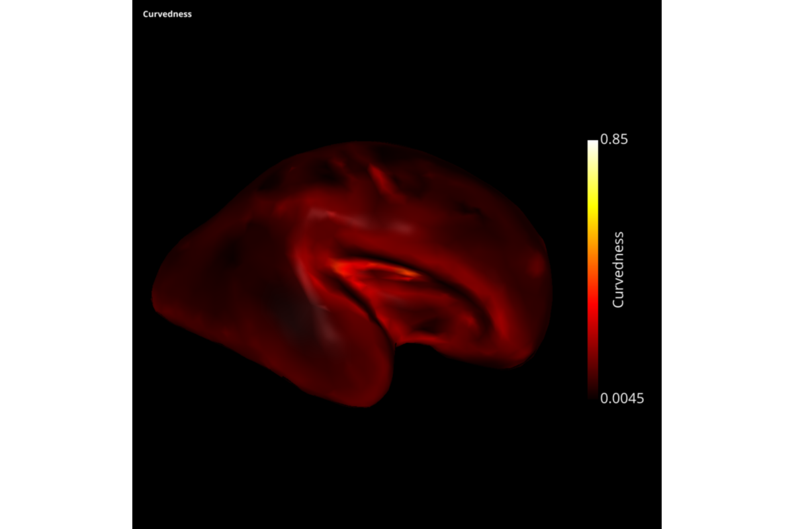

Note
Click here to download the full example code
example of curvature estimation in slam¶
# Authors: Guillaume Auzias <guillaume.auzias@univ-amu.fr>
# Julien Barrès <julien.barres@etu.univ-amu.fr>
# License: BSD (3-clause)
# sphinx_gallery_thumbnail_number = 2
importation of slam modules
import slam.utils as ut
import numpy as np
import slam.generate_parametric_surfaces as sgps
import slam.io as sio
import slam.plot as splt
import slam.curvature as scurv
loading an examplar mesh
Comptue estimations of principal curvatures
PrincipalCurvatures, PrincipalDir1, PrincipalDir2 = \
scurv.curvatures_and_derivatives(mesh)
Out:
Calculating vertex normals .... Please wait
Finished calculating vertex normals
Calculating curvature tensors ... Please wait
Finished Calculating curvature tensors
Calculating Principal Components ... Please wait
Finished Calculating principal components
Comptue Gauss curvature from principal curvatures
gaussian_curv = PrincipalCurvatures[0, :] * PrincipalCurvatures[1, :]
Comptue mean curvature from principal curvatures
mean_curv = 0.5 * (PrincipalCurvatures[0, :] + PrincipalCurvatures[1, :])
Plot mean curvature
visb_sc = splt.visbrain_plot(mesh=mesh, tex=mean_curv,
caption='mean curvature',
cblabel='mean curvature')
visb_sc.preview()
Out:
/home/toz/miniconda3/envs/trimesh_visbrain/lib/python3.6/site-packages/matplotlib/figure.py:445: UserWarning: Matplotlib is currently using agg, which is a non-GUI backend, so cannot show the figure.
% get_backend())
Plot Gauss curvature
visb_sc = splt.visbrain_plot(mesh=mesh, tex=gaussian_curv,
caption='Gaussian curvature',
cblabel='Gaussian curvature',
cmap='hot')
visb_sc.preview()
Out:
/home/toz/miniconda3/envs/trimesh_visbrain/lib/python3.6/site-packages/matplotlib/figure.py:445: UserWarning: Matplotlib is currently using agg, which is a non-GUI backend, so cannot show the figure.
% get_backend())
Decomposition of the curvatures into ShapeIndex and Curvedness Based on ‘Surface shape and curvature scales
Jan JKoenderink & Andrea Jvan Doorn’
shapeIndex, curvedness = scurv.decompose_curvature(PrincipalCurvatures)
Plot of ShapeIndex and Curvedness
visb_sc = splt.visbrain_plot(mesh=mesh, tex=shapeIndex,
caption='ShapeIndex',
cblabel='ShapeIndex',
cmap='coolwarm')
visb_sc.preview()
visb_sc = splt.visbrain_plot(mesh=mesh, tex=curvedness,
caption='Curvedness',
cblabel='Curvedness',
cmap='hot')
visb_sc.preview()
- 
- 
Out:
/home/toz/miniconda3/envs/trimesh_visbrain/lib/python3.6/site-packages/matplotlib/figure.py:445: UserWarning: Matplotlib is currently using agg, which is a non-GUI backend, so cannot show the figure.
% get_backend())
/home/toz/miniconda3/envs/trimesh_visbrain/lib/python3.6/site-packages/matplotlib/figure.py:445: UserWarning: Matplotlib is currently using agg, which is a non-GUI backend, so cannot show the figure.
% get_backend())
Estimation error on the principal curvature length
Estimated computation of the Principal curvature, K_gauss, K_mean
Out:
Calculating vertex normals .... Please wait
Finished calculating vertex normals
Calculating curvature tensors ... Please wait
Finished Calculating curvature tensors
Calculating Principal Components ... Please wait
Finished Calculating principal components
Analytical computation of the curvatures
k_mean_analytic = sgps.quadric_curv_mean(K)(
np.array(quadric.vertices[:, 0]), np.array(quadric.vertices[:, 1]))
k_gauss_analytic = sgps.quadric_curv_gauss(K)(
np.array(quadric.vertices[:, 0]), np.array(quadric.vertices[:, 1]))
k1_analytic = np.zeros((len(k_mean_analytic)))
k2_analytic = np.zeros((len(k_mean_analytic)))
for i in range(len(k_mean_analytic)):
a, b = np.roots(
(1, -2 * k_mean_analytic[i], k_gauss_analytic[i]))
k1_analytic[i] = min(a, b)
k2_analytic[i] = max(a, b)
Error computation
k_mean_relative_change = abs(
(k_mean_analytic - k_mean_estim) / k_mean_analytic)
k_mean_absolute_change = abs((k_mean_analytic - k_mean_estim))
k1_relative_change = abs((k1_analytic - k1_estim) / k1_analytic)
k1_absolute_change = abs((k1_analytic - k1_estim))
Error plot
visb_sc = splt.visbrain_plot(mesh=quadric, tex=k_mean_absolute_change,
caption='K_mean absolute error',
cblabel='K_mean absolute error',)
visb_sc.preview()
Out:
/home/toz/miniconda3/envs/trimesh_visbrain/lib/python3.6/site-packages/matplotlib/figure.py:445: UserWarning: Matplotlib is currently using agg, which is a non-GUI backend, so cannot show the figure.
% get_backend())
Estimation error on the curvature directions commented because there is a bug: ValueError: shapes (3,2) and (3,2) not aligned: 2 (dim 1) != 3 (dim 0) actually, vec1.shape=(3,) while vec2.shape=(3,2)
Estimated computation of the Principal curvature, Direction1, Direction2
p_curv_estim, d1_estim, d2_estim = scurv.curvatures_and_derivatives(quadric)
Out:
Calculating vertex normals .... Please wait
Finished calculating vertex normals
Calculating curvature tensors ... Please wait
Finished Calculating curvature tensors
Calculating Principal Components ... Please wait
Finished Calculating principal components
Analytical computation of the directions
analytical_directions = sgps.compute_all_principal_directions_3D(K, quadric.vertices)
estimated_directions = np.zeros(analytical_directions.shape)
estimated_directions[:, :, 0] = d1_estim
estimated_directions[:, :, 1] = d2_estim
angular_error_0, dotprods = ut.compare_analytic_estimated_directions(
analytical_directions[:, :, 0], estimated_directions[:,:,0])
angular_error_0 = 180 * angular_error_0 / np.pi
angular_error_1, dotprods = ut.compare_analytic_estimated_directions(
analytical_directions[:, :, 1], estimated_directions[:,:,1])
angular_error_1 = 180 * angular_error_1 / np.pi
Error plot
visb_sc = splt.visbrain_plot(mesh=quadric, tex=angular_error_0,
caption='Angular error 0',
cblabel='Angular error 0',)
visb_sc.preview()
visb_sc = splt.visbrain_plot(mesh=quadric, tex=angular_error_1,
caption='Angular error 1',
cblabel='Angular error 1',)
visb_sc.preview()


Out:
/home/toz/miniconda3/envs/trimesh_visbrain/lib/python3.6/site-packages/matplotlib/figure.py:445: UserWarning: Matplotlib is currently using agg, which is a non-GUI backend, so cannot show the figure.
% get_backend())
/home/toz/miniconda3/envs/trimesh_visbrain/lib/python3.6/site-packages/matplotlib/figure.py:445: UserWarning: Matplotlib is currently using agg, which is a non-GUI backend, so cannot show the figure.
% get_backend())
Total running time of the script: ( 0 minutes 35.308 seconds)